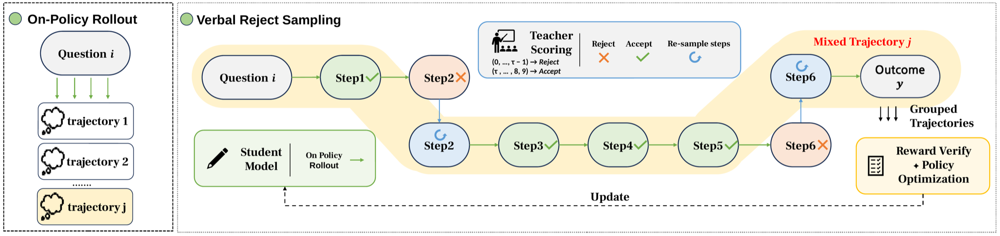
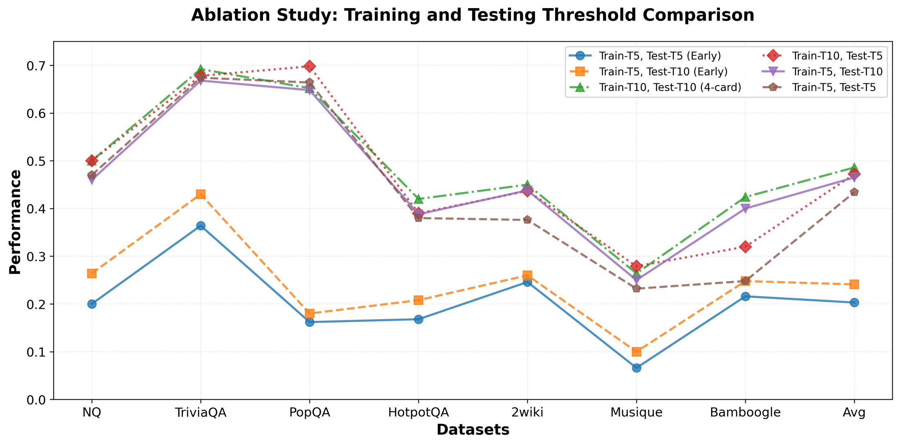

Why not match the teacher's logits?
Standard on-policy distillation (OPD) samples trajectories from the student $\pi_S$ and minimizes the reverse KL to the teacher $\pi_{\mathcal E}$, one token at a time:
This works well when you own the teacher. For long-horizon, agentic reasoning it breaks in two ways.
Storing dense student and teacher distributions over all $V$ tokens at every decoding step costs $\mathcal M = 1.5\cdot B\cdot N\cdot L\cdot V\cdot d_{32}$ bytes, since most stacks keep both FP32 and BF16 copies. That grows linearly in context length and in rollout count. Top-$k$ truncation cuts this by roughly $V/k$, but it still needs white-box access to the teacher.
Distilling search agents with top-1 and top-5 token-level OPD gives the pattern below. Exact match on the simulator's validation set keeps rising during training, but exact match with live search on held-out data stays far lower. Top-5 does worse than top-1 on both datasets. A denser token-level target seems to narrow the policy instead of guiding it.
PopQA
HotpotQA
Can a teacher's verbal score stand in for its logits?
OVD uses a verbal scoring interface. Given a problem $q$ and a student sub-trajectory $y$, the teacher outputs a single score token $S(y,q)\in\{0,1,\dots,9\}$. By default the score is decoded greedily, so a black-box API works. If the ten score-token logits happen to be available, the score can be sampled from them instead.
The first check is whether these scores carry signal. The teacher scores 32 fixed student prefixes for each of 128 prompts. The student then continues only from prefixes that score at least τte, and the final answers are graded.
Verbal selection beats random selection even within a single prompt, so the score separates good prefixes from bad ones for the same question, beyond just flagging which questions are easy. OVD turns this signal into a sampler.
Verbal rejection sampling

Segmenting a rollout. In Web Q&A, the <think>, <search> and <information> tags mark natural step boundaries. Math rollouts have no tags. There OVD splits at the student's maximum-entropy token, a position that often marks a branch point in the reasoning.
Acceptance. For a threshold $\tau$, a student proposal is accepted with probability $a_\tau(y\mid q)=\Pr[S(y,q)\ge\tau]$. With greedy scoring this is simply $\mathbf 1[S\ge\tau]$. Conditioning on acceptance reweights the student's own distribution:
Replacement. A rejected step is resampled by the teacher. At a prefix $y_{<t}$, the next step therefore comes from a two-part mixture:
Takeaway. Thresholding turns verbal ranking into acceptance. The mixture approaches a teacher-preferred target $p_T$ when acceptance tracks the density ratio $p_T/\pi_S$ and the teacher's replacements are close to the target. The appendix makes this precise with total-variation bounds: $\mathrm{TV}(p_{m,\tau},p_T)\le \min\{1,\ \varepsilon+(1-Z_\tau)\eta\}$ per step, where $\varepsilon$ is the acceptance calibration error and $\eta$ the replacement error. Over a horizon of $T$ steps the per-step errors add up to at most $\sum_t\delta_t$.
Does acceptance actually track a density ratio? The paper checks against the teacher-to-student log-likelihood ratio, using $\pi_{\mathcal E}$ as a proxy for $p_T$, on 6,400 Math500 answers.
Training on mixed trajectories
Each complete trajectory receives an outcome reward: token-F1 against the reference for Web Q&A, exact match for math. Advantages are group-relative, as in GRPO. Every token records its source with $m^S_\ell$ or $m^T_\ell$ (where $m^S_\ell+m^T_\ell=1$), so the clipped objective splits cleanly:
A trajectory whose steps were all accepted contributes only the first term. The student learns from its own exploration without matching any teacher distribution. Search results are masked out of the loss.
Results: agentic Web Q&A
The student is Qwen-2.5-3B-Base and the teacher is Qwen2.5-7B, evaluated on eight benchmarks with live search at test time. Rows labeled OVD (τtr, τte) also use the teacher at inference with threshold τte. With τte=0, the student runs alone.
With matched thresholds (5, 5), sampling the score instead of decoding it greedily raises average EM from 39.04% to 41.09%. Sampling implements the probabilistic acceptance rule $a_\tau=\Pr[S\ge\tau]$, and a greedy score reduces it to a hard gate. The two token-level OPD baselines reach only 14.14% and 11.51% average EM.
What should the teacher rewrite, and how often?
Rejecting only search queries works best on single-hop questions. Rejecting only reasoning (CoT) steps works best on multi-hop questions. A moderate training threshold matters too. Replacing every student step (τtr=10) pushes the training mixture almost entirely toward teacher trajectories and discards student paths that might have been correct.

Results: tool-free math reasoning
To separate verbal distillation from tool use, the student is Qwen2.5-Math-1.5B and the teacher is DeepSeek-R1-Distill-Qwen-7B. Three ways of repairing a low-scoring rollout are compared:
- OVD-FR (full response) resamples the whole trajectory.
- OVD-HES (high-entropy suffix) keeps the prefix up to the student's max-entropy token and resamples only the suffix.
- OVD-RS (random suffix) is a control that splits at a random position.
Solution coverage (Pass@16)
Time per training step (s)
RL tends to concentrate probability on a narrow set of reasoning paths. Keeping the student's own prefix and repairing only the weak continuation preserves late-stage solution coverage: +3.24 P@16 over full-response resampling at step 800. With 128 training problems it is also 10.2% faster per step than OVD-FR. With a single fixed problem, OVD-FR is the fastest.
Model checkpoints
Download the released checkpoints from Hugging Face. The math runs use Qwen2.5-Math-1.5B; the Web Q&A run uses Qwen2.5-3B-Base. Historical checkpoints are labeled as such in their model cards.
Browse all OVD checkpoints on Hugging Face
Math · one fixed problem
| Method | Step 300 | Step 500 | Step 600 | Step 800 |
|---|---|---|---|---|
| RLVR / GRPO | Model | Model | Model | Model |
| OVD-FR · Full response | Model | Model | Model | Model |
| OVD-HES · High-entropy suffix | Model | Model | Model | Model |
| OVD-RS · Random suffix | Model | Model | Model | Model |
Math · 128 distinct problems
| Method | Step 300 | Step 500 | Step 600 | Step 800 |
|---|---|---|---|---|
| RLVR / GRPO | Model | Model | Model | Model |
| OVD-FR · Full response | Model | Model | Model | Model |
| OVD-HES · High-entropy suffix | Model | Model | Model | Model |
| OVD-RS · Random suffix | Model | Model | Model | Model |
The 1-data RLVR step-300 checkpoint is a separate retraining run. The 128-data OVD-FR step-500 checkpoint is a model-only continuation; consult its model card for provenance.
Web Q&A
| Base model | Setting | Checkpoint | Model |
|---|---|---|---|
| Qwen2.5-3B-Base | Pure Query Reject · training threshold 5; think distillation off | Step 200 | Download |
The whole teacher interface
The teacher needs no fine-tuning and doesn't need to expose any probabilities. It answers one prompt with one number.
Contributions
- Black-box on-policy distillation. OVD steers student rollouts using verbal scores and selective teacher continuations, without dense logits.
- Distribution-approximation theory. Finite-horizon total-variation bounds on how close the mixed training distribution is to a teacher-preferred target, under explicit calibration and replacement-quality assumptions.
- Evaluation across reasoning settings. Eight Web Q&A benchmarks and tool-free mathematics, with the checkpoint-dependent and resampling-dependent trade-offs reported.
BibTeX
@article{xiong2026ovd,
title = {{OVD}: On-policy Verbal Distillation},
author = {Xiong, Jing and Shen, Hui and Gong, Shansan and Cheng, Yuxin and
Shen, Jianghan and Tao, Chaofan and Tan, Haochen and Bai, Haoli and
Shang, Lifeng and Wong, Ngai},
journal = {arXiv preprint arXiv:2601.21968},
year = {2026}
}